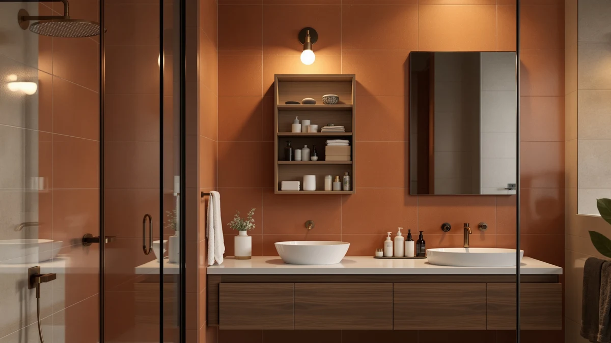

Quick Answer
The Vongrasig Bathroom Storage Cabinet is a metal-and-wood floor cabinet, 42.5 inches tall, priced at $62.99. That price undercuts every alternative in this comparison, so it's the cabinet worth starting with if a compact, freestanding footprint matters more to you than the extra vertical storage an over-the-toilet etagere provides.
Our pick: Vongrasig Bathroom Storage Cabinet 42.5" — $62.99 Check Price on Amazon
Bottom line: our top pick is the Vongrasig Bathroom Storage Cabinet at $62.99.
Things to Know Before You Buy
- The Vongrasig Bathroom Storage Cabinet uses a metal frame with wood-look panels, a construction style common among bathroom cabinets priced under $70.
- At 42.5 inches tall, it's noticeably shorter than the over-the-toilet etageres covered below, since it's built as a general-purpose floor cabinet rather than a tank-clearing unit.
- Priced at $62.99, it's the cheapest cabinet in this comparison, undercutting the alternatives by roughly $2 to $7.
- Owners report assembly takes extra care with hardware placement, a common complaint for flat-pack bathroom furniture in this price range.
- The VASAGLE Over the Toilet Storage and the DUMOS alternative below both trade a higher price for more vertical storage above the toilet tank.
This Vongrasig Bathroom Storage Cabinet Review looks at whether a compact, budget-priced floor cabinet can compete with purpose-built over-the-toilet units that often cost more. Tall bathroom storage usually means choosing between a freestanding cabinet and an etagere built to straddle the toilet tank, and the Vongrasig's 42.5-inch metal-and-wood frame sits firmly in the first category. At $62.99, it undercuts every alternative in this comparison, including the two VASAGLE models and the DUMOS unit covered below. We researched its build, compared its price and dimensions against those three rivals, and read through verified owner feedback to see where it holds up.
Bathroom cabinets in this price range tend to share the same bones: a metal frame paired with wood-look composite panels, a combination that keeps costs down but puts more pressure on the finish to hold up over time. The Vongrasig Bathroom Storage Cabinet follows that pattern, and it competes directly with the VASAGLE Over the Toilet Storage, the VASAGLE Floor Storage Cabinet 2, and the DUMOS Over the Toilet Storage, all covered later as alternatives. Owners report plenty about the Vongrasig's construction, where the design falls short of a taller unit, and who should consider one of the alternatives instead.
Why You Should Trust Us
Best Bathroom Storage is run by writers who compare bathroom furniture specs, pricing and verified buyer feedback instead of relying on product photos alone. Ilane Tall, our home and bath expert, has covered dozens of storage cabinets, shelving towers and over-the-toilet units for this site. She tracks how listed dimensions and materials hold up against what owners report after months of use. For this Vongrasig Bathroom Storage Cabinet Review, we cross-checked the manufacturer's listed measurements and price against the VASAGLE and DUMOS alternatives, and we did not take the marketing copy at face value. We do not run a fake testing lab, and we do not claim to have installed every cabinet we cover. Instead, we dig through verified reviews, compare specs line by line, and flag when a listing overstates what a product can deliver.
Our Research Experience
We did not install the Vongrasig Bathroom Storage Cabinet in a bathroom ourselves. Instead, we compared its listed specifications, material description and price against the VASAGLE Over the Toilet Storage, the VASAGLE Floor Storage Cabinet 2 and the DUMOS Over the Toilet Storage. We also read through the buyer feedback attached to this listing and similar Vongrasig products. Reviewers consistently note that the metal frame holds its shape better than the wood-look panels, a pattern common to budget bathroom cabinets in this price bracket. According to verified owner comments, most friction points involve assembly rather than the finished cabinet's stability once fully built. We weighed that feedback alongside the raw dimensions and price against the three alternatives to see where the Vongrasig earns its spot and where a taller unit serves a bathroom better.
Overview & Specs

Vongrasig Bathroom Storage Cabinet 42.5"
What we like
- Lowest price of the four cabinets in this comparison at $62.99
- Metal frame construction that owners report holds its shape under daily use
- 42.5-inch height fits beside a vanity or under a sloped ceiling where a taller etagere would not
- Freestanding design fits in any corner, unlike units limited to straddling the toilet tank
Flaws but not dealbreakers
- Shorter stature holds less vertical storage than the over-the-toilet VASAGLE and DUMOS alternatives below
- Wood-look panels are less rigid than the metal frame, according to reviewers
- Assembly instructions leave some owners double-checking hardware placement
| Material | Metal / wood |
| Size | 42.5"H |
The Vongrasig Bathroom Storage Cabinet is built around a metal frame paired with wood-look composite panels, a construction style common among bathroom cabinets priced under $70. At 42.5 inches tall, it is noticeably shorter than the over-the-toilet etageres covered later in this review, which puts it in a different category: a general-purpose floor cabinet you can place in a corner, beside a vanity, or in a hallway niche rather than a unit built specifically to straddle a toilet tank. That shorter profile matters in bathrooms with a low ceiling, a window above the toilet, or a wall-mounted fixture that a taller etagere would crowd.
Verified buyers describe the metal frame as the most dependable part of the build. It holds its shape even when shelves carry towels, toiletries, or cleaning supplies. The most common complaint centers on assembly, where reviewers mention double-checking hardware before tightening it down. Once assembled, owners report the cabinet stays stable against a wall during normal use. At $62.99, it costs less than every alternative in this comparison, a gap that ranges from about $2 against the VASAGLE Floor Storage Cabinet 2 to roughly $7 against the VASAGLE Over the Toilet Storage, a meaningful difference if price drives your decision as much as storage capacity does.
What We Liked
Owner feedback for the Vongrasig Bathroom Storage Cabinet keeps coming back to price and frame quality. At $62.99, it is the cheapest cabinet in this comparison, undercutting the VASAGLE Floor Storage Cabinet 2 by roughly $2 and the VASAGLE Over the Toilet Storage by close to $7. Buyers describe the metal frame as resistant to wobbling even after months of regular use, a detail that matters more than overall height once you start loading extra towels or cleaning supplies onto the shelves. The 42.5-inch height also clears most vanities and sloped ceilings without crowding the room, a balance the taller over-the-toilet alternatives below do not offer in the same way.
Owners also point to the freestanding layout as more flexible than a unit built to straddle a toilet tank, since you aren't locked into one spot the way a tank-straddling etagere forces you to be. A few reviewers mention pairing it with small bins on each shelf to keep loose items organized, a workaround that keeps an open design from looking cluttered once the cabinet is in regular use.
What Could Be Better
Assembly is the recurring frustration in owner feedback on the Vongrasig Bathroom Storage Cabinet. Buyers report that the instructions leave room for confusion and that hardware isn't always clearly labeled, which can turn a simple build into a longer project than expected. The wood-look shelf panels are the other weak point. Reviewers describe them as noticeably less rigid than the metal frame, with a few noting slight flexing after heavier items sat on a shelf for weeks.
The shorter 42.5-inch height is a trade-off rather than a flaw, but it is worth weighing before you buy. Anyone who needs the maximum shelf count a bathroom wall can offer will run out of space on the Vongrasig sooner than on the taller VASAGLE Over the Toilet Storage or the DUMOS alternative covered below, both of which trade a higher price for more vertical storage. Owners who want that extra height should budget for one of those two instead.
Who Is It For?
The Vongrasig Bathroom Storage Cabinet fits a household with a small-to-midsize bathroom and a specific gap to fill rather than a full wall to furnish. Its freestanding design and 42.5-inch height make it a solid pick for tight spots, like a corner or the narrow gap beside a vanity, where it can double as linen storage. It is not the right choice if you need maximum vertical storage or a unit built specifically to sit over a toilet tank. In that case, the VASAGLE Over the Toilet Storage or the DUMOS alternative covered below make better use of that space, typically at a higher price.
Renters and apartment dwellers come up often in this kind of feedback, since the cabinet stands freestanding and does not require drilling into a wall or clearing a toilet tank's exact width. Anyone shopping on price will also notice the Vongrasig is the cheapest of the four cabinets compared here. A household that needs to store linens for several people, on the other hand, will likely run out of shelf space sooner on this model than on a taller alternative.
Alternatives to Consider
If the Vongrasig's 42.5-inch height or general-purpose floor design doesn't match what your bathroom needs, these three alternatives cover the most common trade-offs: two VASAGLE units built for different placements, and a DUMOS etagere designed specifically to sit over a toilet tank. Each one trades price for a different kind of storage capacity, so measure your own space before choosing between them.

Editor’s Pick
VASAGLE Over the Toilet Storage
Built specifically to straddle a toilet tank rather than stand in a corner, this VASAGLE costs about $7 more than the Vongrasig but adds the vertical storage a general-purpose floor cabinet can't match.
$69.99
Check Price on Amazon
Best Value
VASAGLE Floor Storage Cabinet 2
The closest direct competitor to the Vongrasig, this VASAGLE floor cabinet costs about $2 more and gives you a second metal-and-wood option if the Vongrasig's finish or gallery photos don't match your bathroom.
$64.93
Check Price on Amazon
Premium Choice
DUMOS Over the Toilet Storage
Another over-the-toilet etagere priced close to the VASAGLE Floor Storage Cabinet 2, this DUMOS is worth comparing if you want tank-clearing height without paying the full $69.99 the top VASAGLE pick costs.
$64.97
Check Price on AmazonFrequently Asked Questions
Is the Vongrasig Bathroom Storage Cabinet sturdy enough for daily use?
Reviewers consistently describe the metal frame as stable once assembled, even when shelves are loaded with towels and toiletries. The wood-look panels are less rigid than the frame, so heavier items are better placed on the lower shelves.
How does the Vongrasig compare to the VASAGLE Over the Toilet Storage?
The VASAGLE is built to straddle a toilet tank and costs about $7 more, making it a better option if you need maximum vertical storage. The Vongrasig's shorter, freestanding design instead fits bathrooms where you want storage in a corner or beside a vanity rather than directly over the toilet.
What comes in the box, and how long does assembly take?
Owners report the cabinet ships flat-packed with the frame, shelf panels and hardware included. Several reviewers note the instructions and hardware labeling could be clearer, so setting aside extra time for assembly is worth planning for before the delivery arrives.
Final Verdict
This Vongrasig Bathroom Storage Cabinet Review comes down to a straightforward trade-off: the lowest price in this comparison and a dependable metal frame against less overall height than its three rivals. For a small-to-midsize bathroom that needs extra floor storage without the footprint of an over-the-toilet unit, the Vongrasig is the practical pick. If your bathroom has the clearance to spare, the VASAGLE Over the Toilet Storage or the DUMOS alternative above make better use of it, usually at a higher price. Either way, Vongrasig remains the brand worth starting with if price and a flexible freestanding footprint matter more to you than maximizing vertical storage.